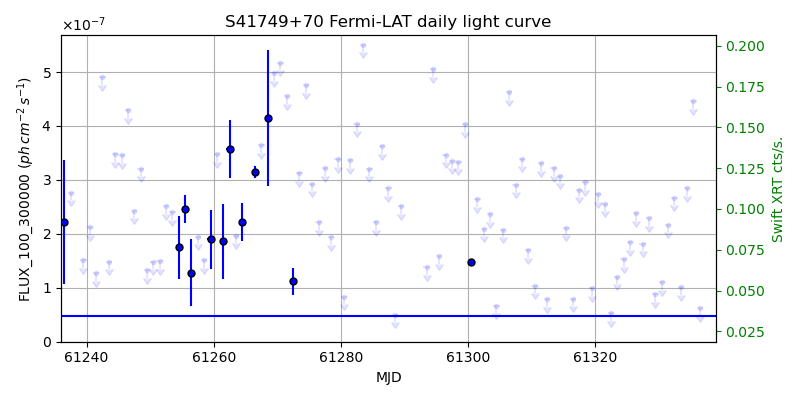
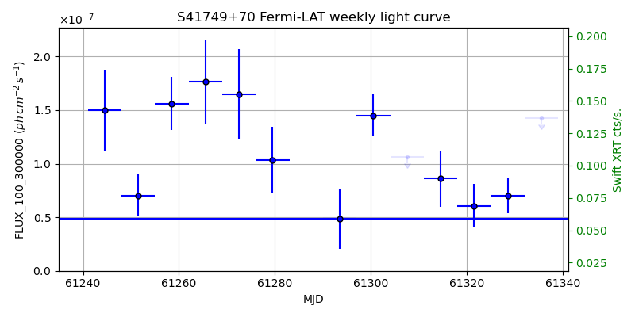
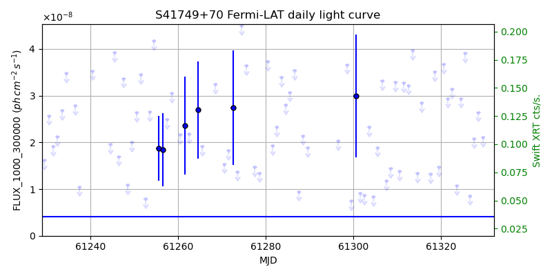
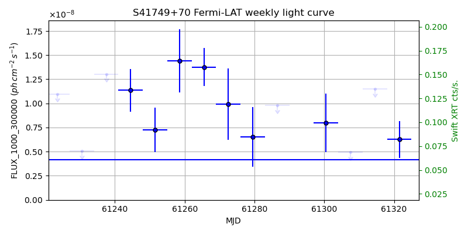

LAT Lightcurve site: https://fermi.gsfc.nasa.gov/ssc/data/access/lat/msl_lc/source/S4_1749p70
Swift site: https://www.swift.psu.edu/monitoring/source.php?source=S41749+70
NED: Query
Time of last update of this page: UT: 2026-10-28 20:03 (MJD: 61341.836)
| Property | Value |
|---|---|
| R.A. | 17:48:32.88 |
| Dec. | 70:05:49.2 |
| z | 0.770 |
| 3FGL SpectrumType | PowerLaw |
| 3FGL PL Index | 2.06 |
| 3FGL Flux_100_300000 | 4.83e-08 1 / (s cm2) |
| 3FGL Flux_1000_300000 | 4.16e-09 1 / (s cm2) |
| 3FGL Flux >200 GeV | 1.47e-11 1 / (s cm2) |
| 3FGL Extrap. Crab >200 GeV | 0.06 |
| 3FGL Flux After EBL Absorption >200GeV | 5.32e-13 1 / (s cm2) |
| 3FGL EBL Crab Fraction >200GeV | 0.00 |

| MJD | dMJD | Flux | dFlux | Frac3FGL | FracCrab>200GeV | EBLFracCrab>200GeV |
|---|---|---|---|---|---|---|
| 61336.50 | 0.50 | 6.20e-08 | 0.00e+00 | 0.00 | 0.00 | 0.00 |
| 61337.50 | 0.50 | 1.29e-07 | 0.00e+00 | 0.00 | 0.00 | 0.00 |
| 61338.50 | 0.50 | 7.57e-07 | 0.00e+00 | 0.00 | 0.00 | 0.00 |
| 61339.50 | 0.50 | 2.30e-06 | 0.00e+00 | 0.00 | 0.00 | 0.00 |
| 61340.50 | 0.50 | 2.25e-07 | 0.00e+00 | 0.00 | 0.00 | 0.00 |

| MJD | dMJD | Flux | dFlux | Frac3FGL | FracCrab>200GeV | EBLFracCrab>200GeV |
|---|---|---|---|---|---|---|
| 61307.50 | 3.50 | 1.06e-07 | 0.00e+00 | 0.00 | 0.00 | 0.00 |
| 61314.50 | 3.50 | 8.61e-08 | 2.62e-08 | 1.78 | 0.11 | 0.00 |
| 61321.50 | 3.50 | 6.08e-08 | 2.02e-08 | 1.26 | 0.08 | 0.00 |
| 61328.50 | 3.50 | 7.00e-08 | 1.62e-08 | 1.45 | 0.09 | 0.00 |
| 61335.50 | 3.50 | 1.42e-07 | 0.00e+00 | 0.00 | 0.00 | 0.00 |

| MJD | dMJD | Flux | dFlux | Frac3FGL | FracCrab>200GeV | EBLFracCrab>200GeV |
|---|---|---|---|---|---|---|
| 61336.50 | 0.50 | 4.07e-08 | 0.00e+00 | 0.00 | 0.00 | 0.00 |
| 61337.50 | 0.50 | 3.15e-08 | 0.00e+00 | 0.00 | 0.00 | 0.00 |
| 61338.50 | 0.50 | 6.26e-08 | 0.00e+00 | 0.00 | 0.00 | 0.00 |
| 61339.50 | 0.50 | 9.46e-07 | 0.00e+00 | 0.00 | 0.00 | 0.00 |
| 61340.50 | 0.50 | 1.94e-08 | 0.00e+00 | 0.00 | 0.00 | 0.00 |

| MJD | dMJD | Flux | dFlux | Frac3FGL | FracCrab>200GeV | EBLFracCrab>200GeV |
|---|---|---|---|---|---|---|
| 61307.50 | 3.50 | 4.93e-09 | 0.00e+00 | 0.00 | 0.00 | 0.00 |
| 61314.50 | 3.50 | 1.15e-08 | 0.00e+00 | 0.00 | 0.00 | 0.00 |
| 61321.50 | 3.50 | 6.26e-09 | 1.93e-09 | 1.51 | 0.09 | 0.00 |
| 61328.50 | 3.50 | 7.95e-09 | 2.63e-09 | 1.91 | 0.12 | 0.00 |
| 61335.50 | 3.50 | 9.12e-09 | 0.00e+00 | 0.00 | 0.00 | 0.00 |
--------------------------------------------------------- Using user-supplied coords: 17:48:32.88 70:05:49.2 2000 --------------------------------------------------------- FLWO UT night of: 2026-10-29 Local Sid. @ Midnight: 02:06 Sunset (-15.0) (local, UT): 18:46 01:46 Sunrise (-15.0) (local, UT): 05:30 12:30 Moonrise (local, UT): 19:35 02:35 Moonset (local, UT): Moon phase: 0.87 --------------------------------------------------------- AzTime LSID UT Obj_el Obj_az Mn_el Mn_az Sep. --------------------------------------------------------- 18:46 20:51 01:46 44.1 340.1 -9.1 50.7 82.8 19:16 21:21 02:16 41.8 338.5 -2.8 54.8 82.7 19:46 21:51 02:46 39.4 337.4 1.2 58.6 82.7 20:16 22:21 03:16 36.9 336.7 6.3 62.1 82.6 20:46 22:51 03:46 34.4 336.4 11.8 65.4 82.6 21:16 23:21 04:16 31.8 336.5 17.4 68.5 82.5 21:46 23:52 04:46 29.3 337.0 23.2 71.4 82.5 22:16 00:22 05:16 26.8 337.8 29.1 74.2 82.4 22:46 00:52 05:46 24.5 338.9 35.0 77.0 82.4 23:16 01:22 06:16 22.3 340.3 41.1 79.7 82.3 23:46 01:52 06:46 20.2 341.9 47.2 82.6 82.3 00:16 02:22 07:16 18.3 343.7 53.4 85.5 82.2 00:46 02:52 07:46 16.6 345.7 59.6 88.8 82.2 01:16 03:22 08:16 15.2 347.9 65.8 92.7 82.2 01:46 03:52 08:46 13.9 350.2 71.9 97.9 82.1 02:16 04:22 09:16 13.0 352.7 78.0 106.5 82.1 02:46 04:52 09:46 12.3 355.2 83.6 127.9 82.1 03:16 05:22 10:16 11.9 357.8 85.7 199.7 82.1 03:46 05:52 10:46 11.8 0.4 81.3 244.8 82.1 04:16 06:23 11:16 12.0 3.0 75.4 258.2 82.1 04:46 06:53 11:46 12.5 5.6 69.2 264.9 82.1 05:16 07:23 12:16 13.3 8.1 63.0 269.4 82.1 05:30 07:37 12:30 13.7 9.2 60.1 271.1 82.2 --------------------------------------------------------- Source never above horizon of 55.0 deg. Dark hours >55 deg.: 0.00